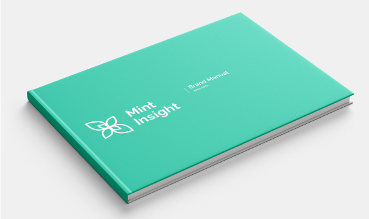
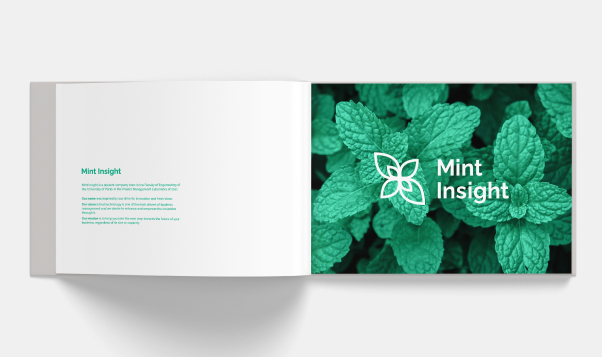
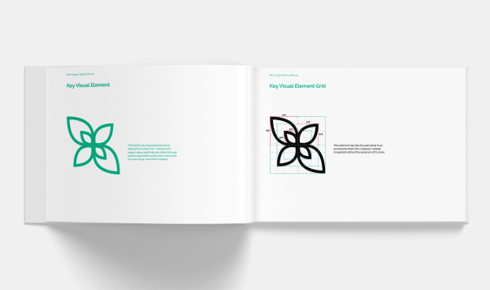
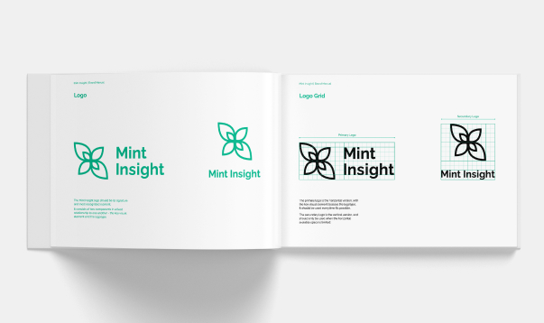
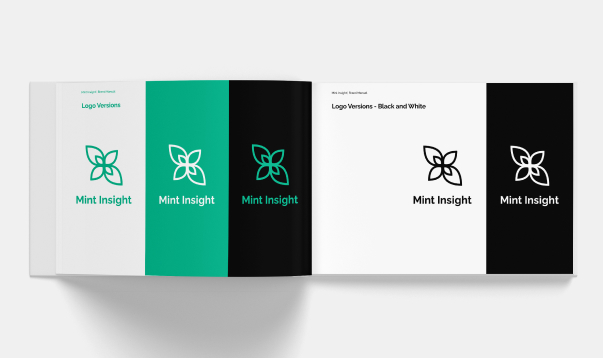
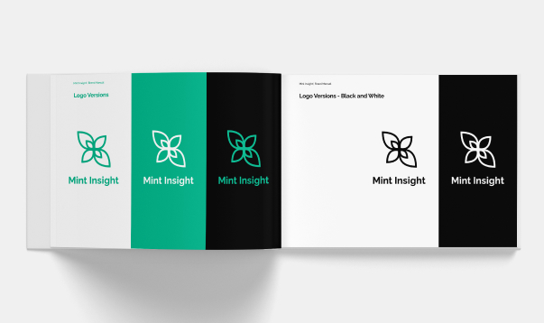
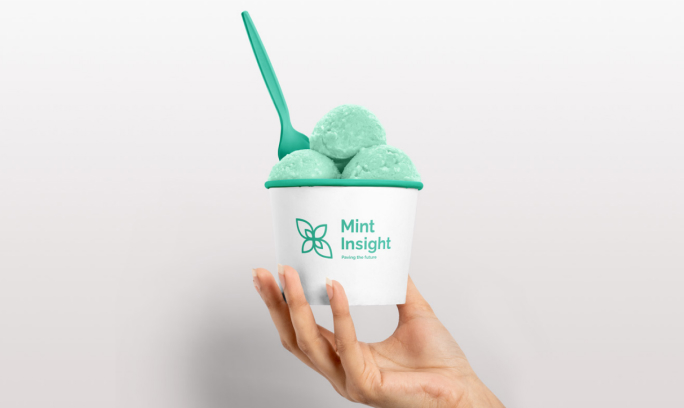
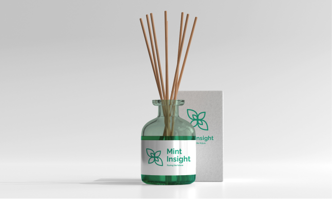

Home
Home Anathema
Anathema- afeiçoa-te
- Sky Tales
- Mint Insight
- [UP] Arte
- GG WP
- desenha-me um poema.
- About

“Mint Insight” offered a fresh and innovative approach in the development of projects through technology.
As part of the curricular internship of the Degree in Communication Design, I was an intern at the Project Management Laboratory, at the Faculty of Engineering of the University of Porto, where I joined the company Mint Insight, as Head Designer.
Mint Insight was responsible for the development of a project for each of the following companies and institutions: Strongstep, EZ4U, FEUP Museum and Construction Institute.
As the Head Designer I was responsible for developing Mint Insight’s brand identity.
Project developed during the Communication Design Bachelor's Degree
February 2021 - June 2021
Software
Adobe Photoshop
Adobe Illustrator
Blender
Brand Name
The name Mint Insight was the name adopted by the company. It aims to represent its ambition for innovation and fresh ideas.
The Project Management Laboratory (LGP) creates a bridge between the business and the academic world. Companies participate in it for the opportunity to have their projects developed by young people with new ideas and fresh perspectives.
The association of Mint, as a plant that communicates the idea of freshness, with Insight, seeks to explore this aspect, assuming ourselves as a green company, made of young students, and still maturing.
Brand Image
Mint represents in the brand name what Mint Insight aims to be: innovative and fresh.Therefore, this plant was immediately an important element in the construction of the company's identity.
Mint Insight's brand image is based on an icon of the mint plant, representing it directly by the shape of its leaves. In its construction, it was important to maintain the organic shape of the plant, although through geometric proportions, in order to represent, at the same time, the technical nature of the company.
Typography
Mint Insight communicates through the sans serif family “Raleway”, an elegant typography that maintains a round design and therefore is able to follow the brand icon without distorting it.
Color
Mint Insight’s main color reinforces the importance of the mint in the brand identity. Therefore, it is the green from the leaves of this plant.
It was important to ensure legibility of the color picked over white, but also over black, to allow the brand image to adapt to different chromatic environments.
Brand Manual
    

The 5th Element
Considering the importance the mint has on the brand’s identity and its various sensory dimensions and symbolisms associated with this plant, it arises as the fifth element of Mint Insight, in an attempt to explore the company's identity beyond its logo.
Vision
The presence of the mint plant in the final presentation of the company in the LGP Challenge was essential. The plant had to be seen not only by its leaves, but as a whole.
Considering this event would be online, the physical presence of the plant would not be possible, and it was needed to represent it in a digital format.
The plant was made tangible to the audience through 3D animation. In the produced animations, the projects, proposed by the four companies to Mint Insight, are symbolized through seeds. These are planted, and a mint plant sprouts. Thus the development of the projects is associated with plant growth.
Flavor
Mint Insight's connection to the mint plant is not just aesthetic and visual, therefore its identity needs to address other senses as well. When you think of mint, its fresh flavor is, directly, invoked through synesthesia.
It was this sense that, initially, originated the name of the company. Thus, it must integrate its identity in a tangible way. The mint flavor could be present in sweets at the reception of the company’s building, or even in an ice cream served at its events.
Scent
The freshness of mint does not come only from its flavor, It also comes from its scent. Therefore, this sense must be further explored in Mint Insight's identity. The smell of mint could be diffused in the auditorium of the LGP Challenge, settling in the audience's memory, or even become the aroma of the company building.
